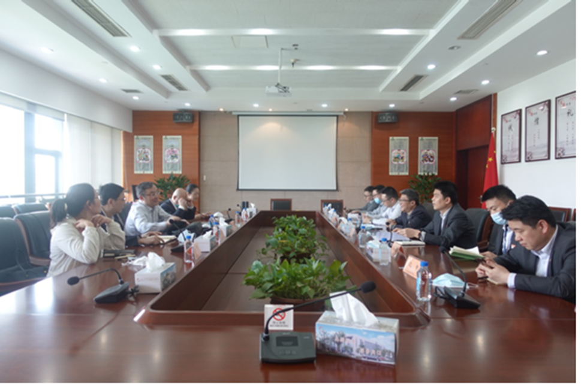

苏州市行政审批局副局长张硕群一行调研我区政务服务工作
【信息发布时间：2020-04-27阅读次数：】 【我要打印】 【关闭】
4月26日
下午
苏州市行政审批局副局长张硕群、公共资源交易管理处处长谢伟等一行五人来我局现场调研政务服务工作，区行政审批局局长孙曙东及相关负责人陪同调研。
在区政务服务大厅现场，张硕群副局长重点考察了三楼公共资源交易中心开评标场地，对近期疫情防控工作及窗口审批服务等情况也进行了解。
座谈会上
张硕群副局长充分肯定了我局公共资源交易和农村产权交易工作。并强调做好“优化、协同、高效”六字诀。
■一是优化
要进一步理顺交易中心体制，做到科学合理、权责一致。
■二是协同
交易中心要有统有分、有主有次，做到上下协同。
■三是高效
在优化协同基础上，切实提高运转效率，做到高效规范。

区行政审批局局长孙曙东和相关负责人对我局政务服务日常工作以及公共资源交易中心、农村产权交易中心的主要工作情况等进行了详细汇报。

最后
张硕群副局长希望政务服务系统，进一步强化客户思维，做到便民至上，切实发挥政务服务强军力量，用政务服务人的“辛苦指数”，换取群众办事的“满意指数”，不断助力经济社会有序发展。